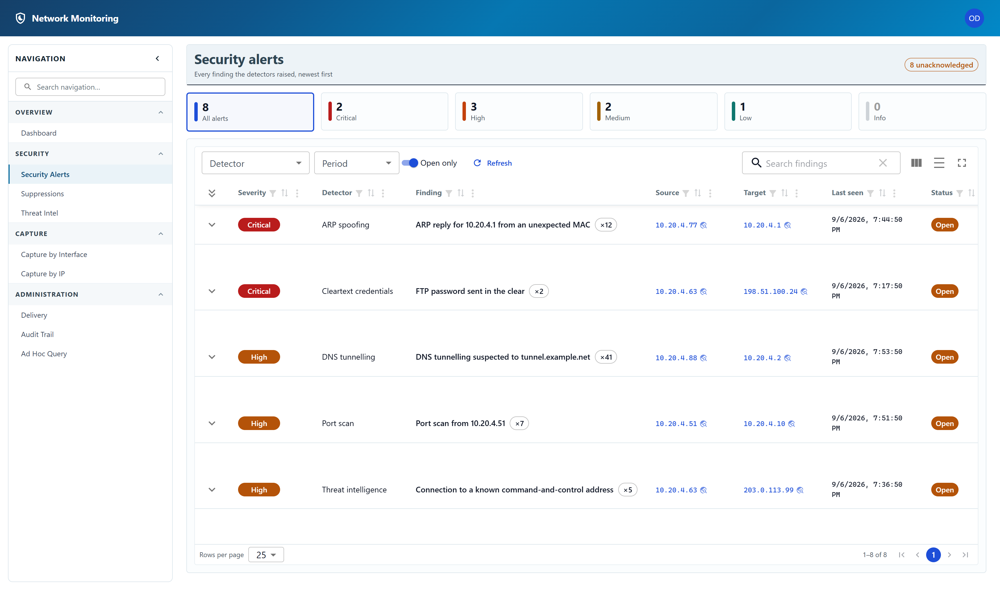
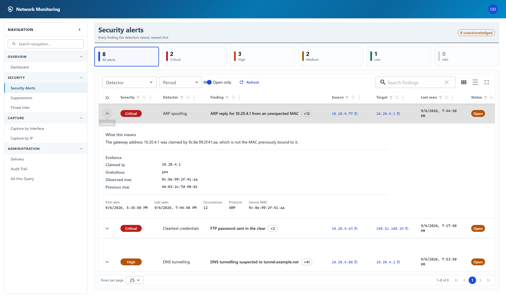
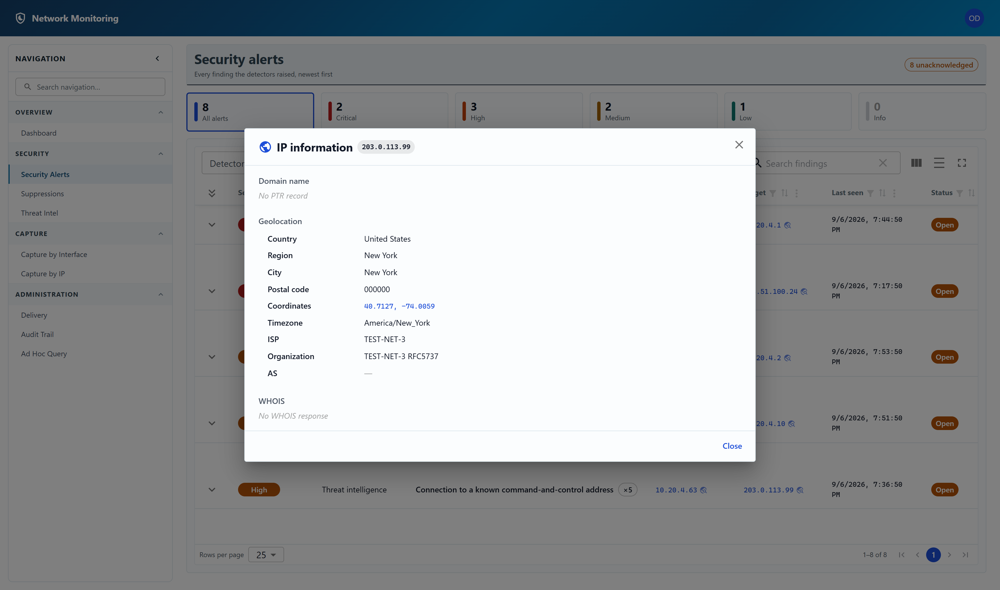

Security alerts
Every finding the detectors raised, newest first.

Narrowing the list
- The severity tiles along the top are filters as well as counts. Click Critical to see only critical findings; click the same tile again, or All alerts, to clear it.
- Detector limits the list to one kind of check.
- Period limits it to findings last seen inside a window.
- Open only hides findings somebody has already acknowledged. It is on by default, which is why the list can look empty on a system where everything has been dealt with.
- Search findings matches across the whole row.
Reading a finding
Click the chevron at the left of a row to expand it.

- What this means — the finding in a sentence, in terms of the hosts involved.
- Evidence — what the detector actually saw. This is the part to check before acting: the claimed address and the two MAC addresses for an ARP finding, the port count and window for a scan, the feed name for a threat-intel match.
- First seen, Last seen and Occurrences — repeats of the same finding are aggregated into one row rather than flooding the list, so a count of 12 means the same thing was seen twelve times between those two times.
Evidence never contains a password or a packet payload. The cleartext-credential detector records the username and the length of the secret, never the secret. It does contain internal addresses, MAC addresses and usernames, which is why sending it to a third-party chat service is a separate decision — see Delivery settings.
Looking up an address
Every address in the table is a link. Click one to run a reverse DNS, geolocation and WHOIS lookup against it, without leaving the page.

Useful mostly for external addresses — the owner of a destination one of your hosts has been talking to. An address on your own network has no public registration and will come back mostly empty, which is itself an answer.
Acknowledging and deleting
Acknowledging a finding marks it as dealt with and takes it out of the default view. It does not delete anything, and it records who did it. Use the tick at the end of the row; the same control reads Reopen for a finding already acknowledged.
Deleting a finding removes it and its evidence permanently. There is no undo, and the deletion itself is recorded in the audit trail — who deleted what, and when.
- Any signed-in account can view findings, filter them, look up an address, and acknowledge or reopen a finding.
- Deleting a finding, deleting every finding, and removing a known device are restricted to administrators.